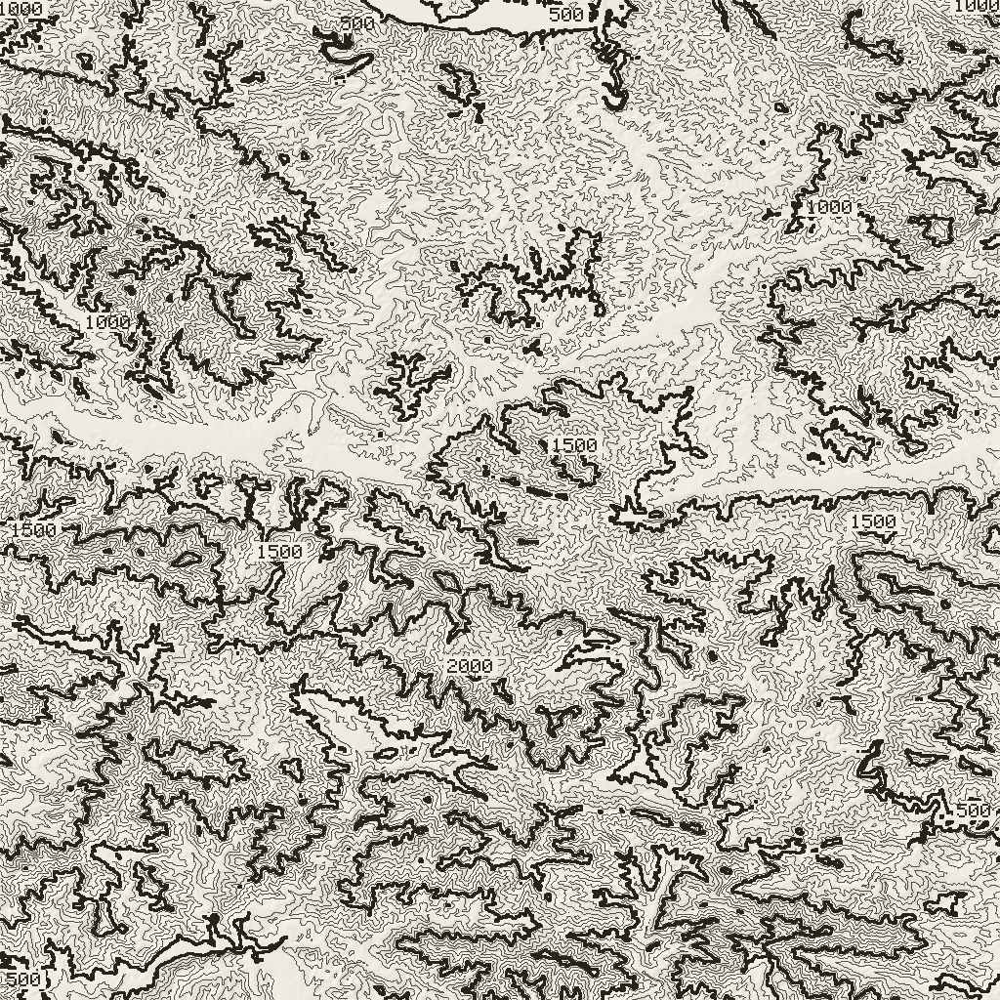

图幅 04｜木札岭样区
木札岭样区三维地形图

读数取自与图面同一份 SRTM 栅格；高程为 DSM，含植被冠层，垂直精度约 ±16 m。
图幅 01／共 01 幅
木札岭样区地形与派生图层
数据加载中…
这是一张能核对的地形图，不是氛围背景。它由 SRTM 1 弧秒高程数据绘制： 区域范围、像元尺寸、垂直基准、精度指标都写在下方表格里。
图面上的比例尺、指北针与读数都是实时算出来的，不是画上去的装饰。 三维视图里比例尺随位置变化，所以它标明自己标的是哪一点 —— 图面中心； 指北针随相机方向转动；指针读数与着色器用的是同一份栅格，可以反查。
数据质量声明
每一项都写在图上
| 空白与填补：本区域四块瓦片抽样均未发现空洞，未做任何插值填补。 真实 DEM ≠ 真实地面：SRTM 为 DSM，林区高程含植被冠层，温带林系统性偏高约 5–20 m，本站不做冠层校正。 每个像素的来历分四层：原始观测／空洞填补／算法派生／装饰着色 —— 本图为原始观测 + 算法派生，无填补。 |
| 像元东西与南北不等长 —— 1 弧秒在 33.75°N 并不是 30 m。 所有派生量（坡度、坡向、晕渲、等高线）都是算法产物，不是实测。 |
剖面
A–A′ 地形剖面
沿样区中纬线自西向东切一刀，看这条线上地面高度的变化 —— 山脊与河谷在图上是两个方向相反的折点。
方法
这张图是怎么算出来的
处理链
- 下载 SRTM
.hgt.gz瓦片，校验解压尺寸是否为 3601×3601×2。 - 按大端序逐字节合成 int16 —— 用小端读会得到 ±3 万米的鬼值，而且不报错。
- 双线性重采样到 1024² 规则网格，行 0 为北；像元尺寸按经纬度分别计算。
- Horn 3×3 卷积求梯度：
p为东西向、q为南北向。 - 坡度 =
atan(√(p²+q²))；坡向 =atan2(−p, −q)（下坡方向，0° 为北、顺时针）。 - 晕渲 =
sin(alt)·cos(s) + cos(alt)·sin(s)·cos(az − aspect)，光源 315°／45°。 - 等高线与经纬网在着色器里由高程纹理实时计算：等高距 100 m，计曲线 500 m，经纬网 5′。
| 步骤 | 输入 | 输出 |
|---|---|---|
| 取瓦片 | .hgt.gz，3601×3601，大端 int16 | 高程场（米，EGM96） |
| 重采样 | 不规则经纬网点 | 1024² 规则网格，行 0 为北 |
| 梯度 | 3×3 窗口，像元尺寸分东西南北 | p（东西）、q（南北） |
| 坡度／坡向 | p、q | 坡度角、下坡方位角 |
| 晕渲 | 坡度、坡向、光源 315°／45° | 0–1 明暗系数 |
| 等高线 | 高程场、等高距 100 m | 折线 + 计曲线 + 高程注记 |
| 派生量全部在构建期算好（prepare-dem.cjs），运行期只做查表与双线性插值。 坡度与坡向是两个独立派生量，不互为输入。 | ||
两个容易画错的地方：坡向公式的参数顺序写反，会把晕渲明暗整个翻过来，山被读成坑而图看起来依然像山； 等高距必须与图面比例匹配，本区平均坡度约 21.6°、像元约 50 m，取 25 m 会让线糊成一片，100 m 才是这张图能读的间距。